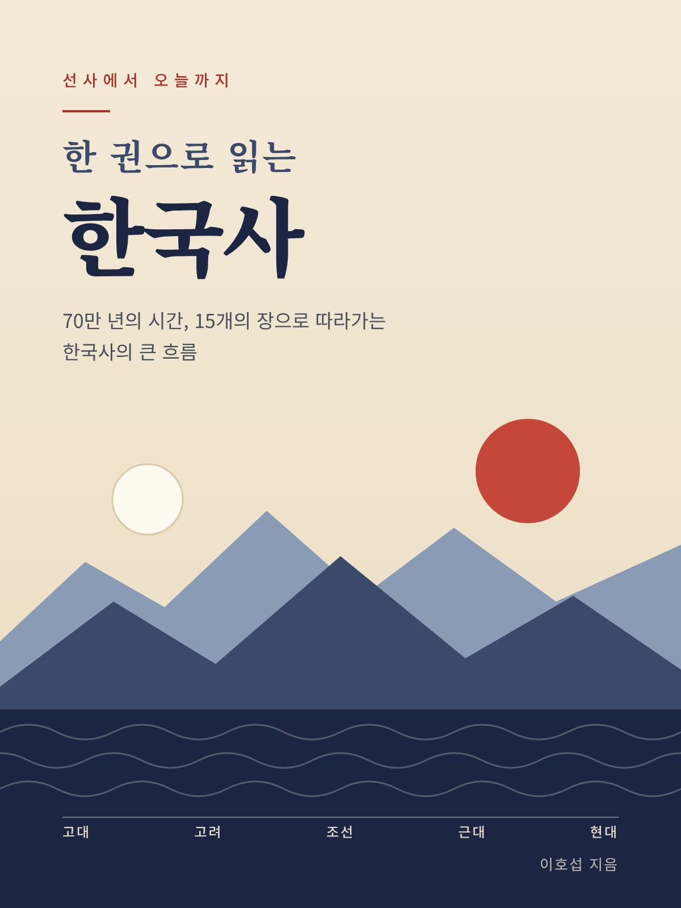

한 권으로 읽는 한국사¶

머리말¶
역사는 외워야 할 연도의 목록이 아니라, 사람들이 주어진 조건 속에서 어떤 선택을 했고 그 선택이 어떤 결과를 낳았는지에 관한 이야기입니다. 한반도와 만주를 무대로 살아온 사람들은 수십만 년 전 뗀석기를 만들던 때부터 오늘날 반도체를 만드는 때까지, 끊임없이 이웃과 교류하고 다투며 자신들의 사회를 만들어 왔습니다.
이 책은 그 긴 시간을 한 권에 담으려는 시도입니다. 모든 사건을 빠짐없이 다루기보다는, 각 시대가 왜 그런 모습이었는지, 그리고 한 시대가 다음 시대로 어떻게 넘어갔는지에 초점을 맞추었습니다.
이 책의 구성¶
| 부 | 장 | 다루는 시기 |
|---|---|---|
| 제1부 고대 | 1장 선사 시대 | 약 70만 년 전 ~ 기원전 2000년경 |
| 2장 고조선과 여러 나라 | 기원전 2333년(전승) ~ 기원 전후 | |
| 3장 삼국의 성립과 발전 | 기원전 1세기 ~ 7세기 | |
| 4장 남북국 시대 | 676년 ~ 935년 | |
| 제2부 고려 | 5장 고려의 성립과 문벌 귀족 사회 | 918년 ~ 1170년 |
| 6장 무신 정권과 원 간섭기 | 1170년 ~ 1392년 | |
| 제3부 조선 | 7장 조선의 건국과 유교 국가 | 1392년 ~ 16세기 |
| 8장 왜란과 호란 | 1592년 ~ 1637년 | |
| 9장 조선 후기 사회의 변동 | 17세기 ~ 1863년 | |
| 제4부 근대 | 10장 개항과 근대 개혁 운동 | 1863년 ~ 1896년 |
| 11장 대한제국과 국권 피탈 | 1897년 ~ 1910년 | |
| 12장 일제 강점기와 독립운동 | 1910년 ~ 1945년 | |
| 제5부 현대 | 13장 광복, 분단, 6·25 전쟁 | 1945년 ~ 1953년 |
| 14장 산업화와 민주화 | 1953년 ~ 1990년대 | |
| 15장 오늘의 한국과 통일의 과제 | 1990년대 ~ 현재 | |
| 부록 | 한국사 연표, 참고 문헌 |
읽는 방법¶
- 각 장은 개관 → 본문 → 생각해 볼 거리 → 핵심 정리 순서로 되어 있습니다. 바쁜 독자는 개관과 핵심 정리만 읽어도 흐름을 잡을 수 있습니다.
- 연도는 모두 서기(西紀)로 적었고, 필요한 경우 왕의 재위 연도를 함께 적었습니다.
- 학계에서 해석이 갈리는 부분은 "학설"이라고 밝히고 대표적인 견해를 함께 소개했습니다.
- 부록의 연표를 옆에 펼쳐 두고 읽으면 시대의 순서를 잡는 데 도움이 됩니다.
일러두기
인명과 지명은 국립국어원 표기를 따랐고, 처음 나올 때 한자를 괄호 안에 함께 적었습니다. 고대사의 연대는 『삼국사기』 등 문헌 기록을 기준으로 하되, 고고학 연구와 차이가 있는 경우 그 사실을 밝혔습니다.